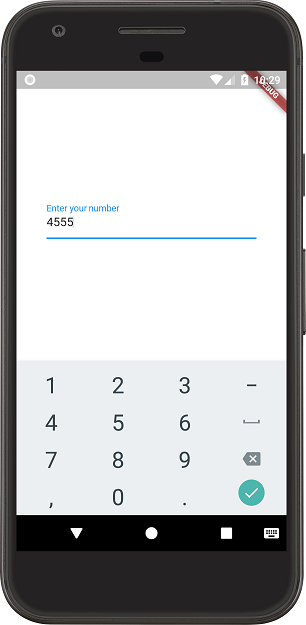

How to create number input field in Flutter?
I'm unable to find a way to create an input field in Flutter that would open up a numeric keyboard and should take numeric input only. Is this possible with Flutter material widgets? Some GitHub discussions seem to indicate this is a supported feature but I'm unable to find any documentation about it.
Answer
You can specify the number as keyboardType for the TextField using:
keyboardType: TextInputType.number
Check my main.dart file
import 'package:flutter/material.dart'; import 'package:flutter/services.dart'; void main() => runApp(new MyApp()); class MyApp extends StatelessWidget { @override Widget build(BuildContext context) { // TODO: implement build return new MaterialApp( home: new HomePage(), theme: new ThemeData(primarySwatch: Colors.blue), ); } } class HomePage extends StatefulWidget { @override State<StatefulWidget> createState() { return new HomePageState(); } } class HomePageState extends State<HomePage> { @override Widget build(BuildContext context) { return new Scaffold( backgroundColor: Colors.white, body: new Container( padding: const EdgeInsets.all(40.0), child: new Column( mainAxisAlignment: MainAxisAlignment.center, children: <Widget>[ new TextField( decoration: new InputDecoration(labelText: "Enter your number"), keyboardType: TextInputType.number, inputFormatters: <TextInputFormatter>[ FilteringTextInputFormatter.digitsOnly ], // Only numbers can be entered ), ], )), ); } }

Suggest
For those who are looking for making TextField or TextFormField accept
only numbers as input, try this code block :
for flutter 1.20 or newer versions
TextFormField( controller: _controller, keyboardType: TextInputType.number, inputFormatters: <TextInputFormatter>[ // for below version 2 use this FilteringTextInputFormatter.allow(RegExp(r'[0-9]')), // for version 2 and greater youcan also use this FilteringTextInputFormatter.digitsOnly ], decoration: InputDecoration( labelText: "whatever you want", hintText: "whatever you want", icon: Icon(Icons.phone_iphone) ) )
for earlier versions of 1.20
TextFormField(
controller: _controller,
keyboardType: TextInputType.number,
inputFormatters: <TextInputFormatter>[
WhitelistingTextInputFormatter.digitsOnly
],
decoration: InputDecoration(
labelText:"whatever you want",
hintText: "whatever you want",
icon: Icon(Icons.phone_iphone)
)
)